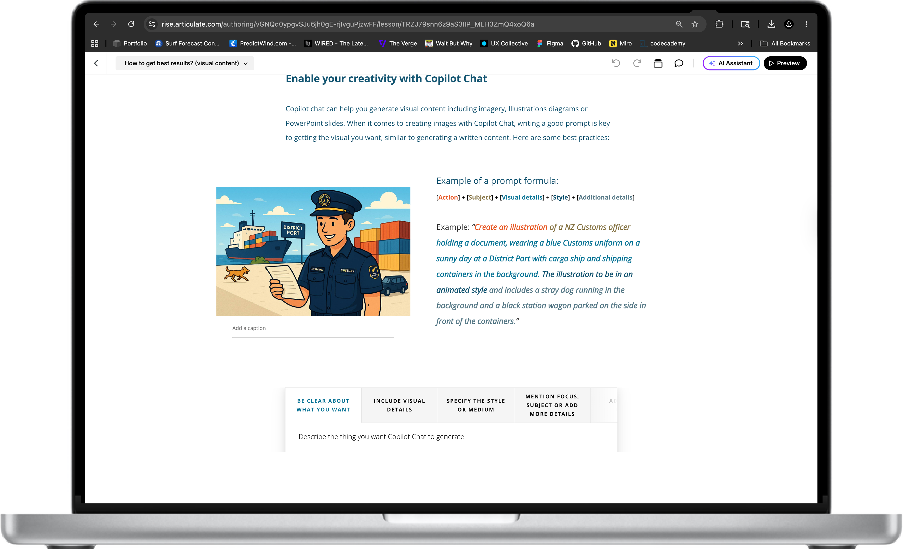

Responsible by design
Safety and privacy guidance was woven throughout rather than bolted on at the end. Dos and don'ts, verification habits, and awareness of AI limitations were built into the core narrative.
Case Study - Instructional Design & UX

Challenge
New Zealand Customs Service became one of the first government agencies to deploy Microsoft Copilot Chat across its workforce. With few internal subject matter experts, no established guidance, and a workforce with varying levels of digital confidence, the challenge was to create something that would actually get people using it, and using it safely.
The stakes were high. Incorrect use of an AI tool in a government context carries real privacy and reputational risk. Getting the tone, content, and approach right mattered as much as getting people to open the module.
Approach
I worked with subject matter experts (who were scarce at the time), the client, the communications team, and Victoria University of Wellington to shape the learning strategy, content, and narrative arc of the module.
The project required balancing several competing demands at once: privacy and compliance requirements, usability for a non-technical audience, clear learning outcomes, UX design within Rise 360 constraints, and a storytelling approach strong enough to drive voluntary uptake.
Design decisions
Safety and privacy guidance was woven throughout rather than bolted on at the end. Dos and don'ts, verification habits, and awareness of AI limitations were built into the core narrative.
No prior AI knowledge assumed. Language, examples, and pacing were all tuned for a general government workforce, with practical scenarios grounded in everyday Customs tasks.
The module was designed to persuade as well as inform. Uptake was a goal, so tone, visuals, and structure were chosen to make AI feel approachable and useful, not threatening or technical.
Module structure
A 20-minute Rise 360 module structured across four phases, from introduction through to safe and responsible use.
Example from the module
One of the module's core skills was helping staff move from vague requests to structured, effective prompts. A simple formula gave them a repeatable starting point.
Prompt formula
[Task] + [Content] + [Context] + [Format] + [Tone]
Example: "Summarise [the copied text] for frontline staff in plain language, using bullet points and a friendly tone."
Task - be clear and specific
Tell Copilot Chat exactly what you want it to do. Use verbs like: generate, create, summarise, design, analyse.
A staff member is reviewing a long, publicly available government policy document related to border procedures. Instead of reading the entire document, they paste a section into Copilot Chat:
Less effective
"Tell me about this policy update."
Good
"Summarise this policy. What are the key changes and how might they affect frontline operations?"
Final Product
Screenshots from the finished Copilot Chat 101 module, built in Articulate Rise 360 and deployed to all New Zealand Customs Service staff.

Impact
As one of the first organisations in New Zealand government to develop structured AI guidance, Customs set a precedent. The module was later adopted by six other government organisations, extending its reach well beyond the original scope.
The project demonstrated that responsible AI literacy at scale is achievable with the right combination of instructional design, UX thinking, stakeholder collaboration, and clear communication strategy.
Scroll to zoom · Click outside to close